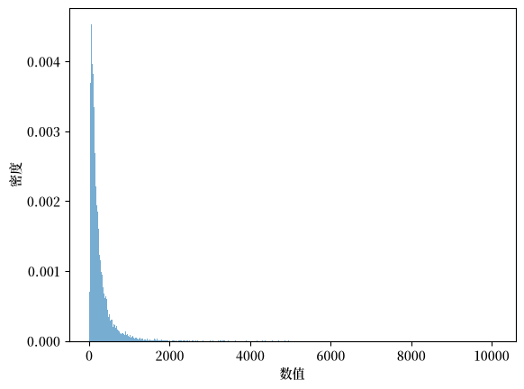
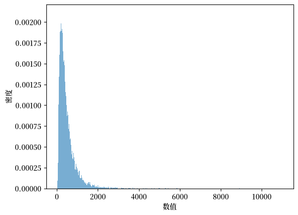
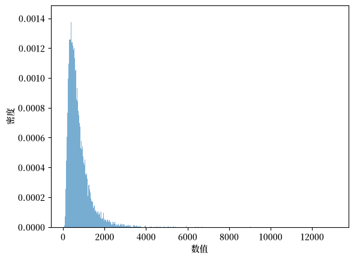
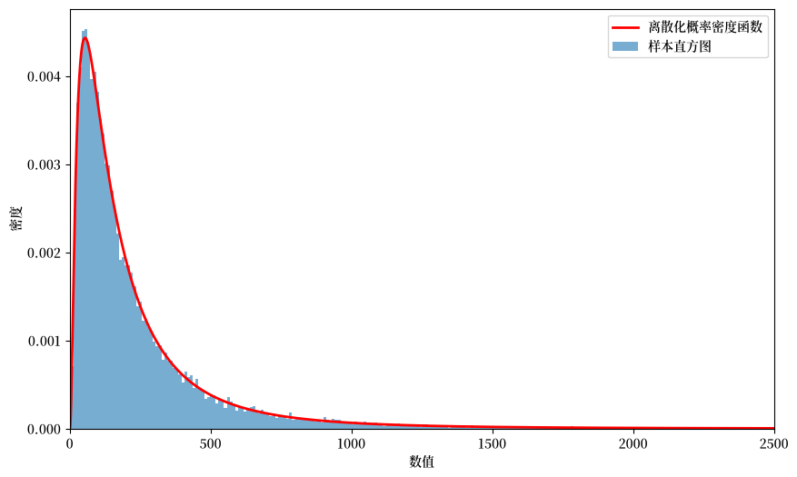
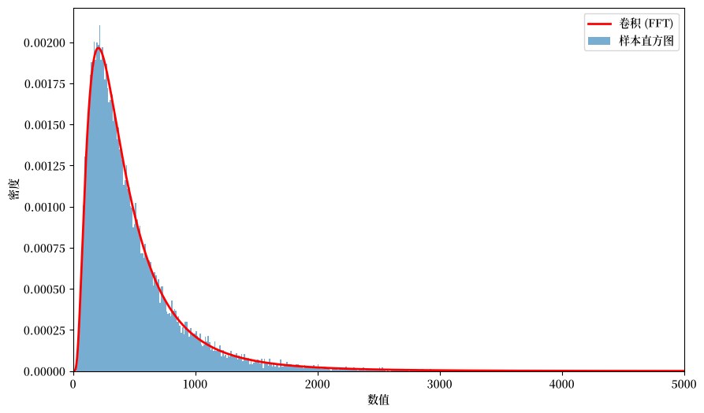
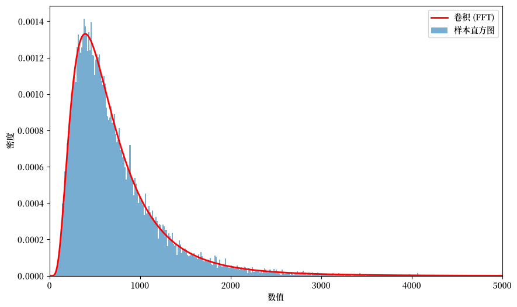
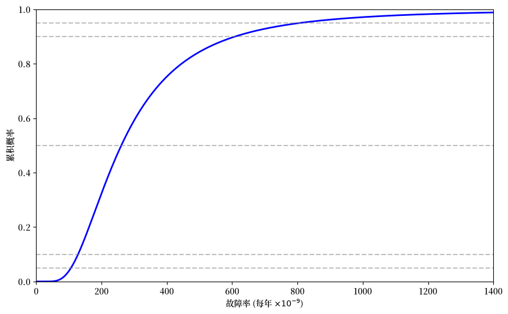

14. 故障树不确定性#
除了Anaconda中已有的库外，本讲座还需要以下库：
!pip install quantecon tabulate
14.1. 概述#
本讲将运用基本工具来近似计算由多个关键部件组成的系统的年度故障率的概率分布。
我们将使用对数正态分布来近似关键部件的概率分布。
为了近似描述系统总故障率（表示为 \(n\) 个对数正态随机变量之和）的概率分布，我们计算这些分布的卷积。
我们将使用以下概念和工具：
对数正态分布
描述独立随机变量之和的概率分布的卷积定理
用于近似多组件系统故障率的故障树分析
用于描述不确定概率的层次概率模型
傅里叶变换和傅里叶逆变换作为计算序列卷积的高效方法
El-Shanawany et al. [2018] 和 Greenfield and Sargent [1993] 应用了这些方法来近似核设施安全系统的故障概率。
这些技术响应了 Apostolakis [1990] 提出的关于量化安全系统可靠性不确定性的建议。
本讲座将使用以下导入和设置：
import numpy as np
import matplotlib.pyplot as plt
import matplotlib as mpl
FONTPATH = "fonts/SourceHanSerifSC-SemiBold.otf"
mpl.font_manager.fontManager.addfont(FONTPATH)
plt.rcParams['font.family'] = ['Source Han Serif SC']
from scipy.signal import fftconvolve
from tabulate import tabulate
import quantecon as qe
14.2. 对数正态分布#
如果随机变量 \(x\) 服从均值为 \(\mu\)、方差为 \(\sigma^2\) 的正态分布，那么 \(y = \exp(x)\) 服从参数为 \(\mu, \sigma^2\) 的对数正态分布。
备注
我们将 \(\mu\) 和 \(\sigma^2\) 称为参数而不是均值和方差，因为：
\(\mu\) 和 \(\sigma^2\) 是 \(x = \log(y)\) 的均值和方差
它们不是 \(y\) 的均值和方差
\(y\) 的均值是 \(\exp(\mu + \frac{1}{2}\sigma^2)\)，方差是 \((e^{\sigma^2} - 1) e^{2\mu + \sigma^2}\)
对数正态随机变量 \(y\) 始终是非负的。
\(y\) 的概率密度函数是
对数正态随机变量的重要特性是：
14.2.1. 稳定性性质#
回顾独立正态分布随机变量具有以下稳定性性质：
如果 \(x_1 \sim N(\mu_1, \sigma_1^2)\) 和 \(x_2 \sim N(\mu_2, \sigma_2^2)\) 是独立的，那么 \(x_1 + x_2 \sim N(\mu_1 + \mu_2, \sigma_1^2 + \sigma_2^2)\)。
独立的对数正态分布具有不同的稳定性性质：独立对数正态随机变量的乘积也是对数正态分布。
具体来说，如果 \(y_1\) 是参数为 \((\mu_1, \sigma_1^2)\) 的对数正态分布，且 \(y_2\) 是参数为 \((\mu_2, \sigma_2^2)\) 的对数正态分布，那么 \(y_1 y_2\) 是参数为 \((\mu_1 + \mu_2, \sigma_1^2 + \sigma_2^2)\) 的对数正态分布。
警告
虽然两个对数正态分布的乘积是对数正态分布，但两个对数正态分布的和却不是对数正态分布。
这个观察结果引出了本讲座的核心挑战：近似独立对数正态随机变量之和的概率分布。
14.3. 卷积定理#
设 \(x\) 和 \(y\) 是概率密度分别为 \(f(x)\) 和 \(g(y)\) 的独立随机变量，其中 \(x, y \in \mathbb{R}\)。
设 \(z = x + y\)。
那么 \(z\) 的概率密度为
其中 \((f*g)\) 表示 \(f\) 和 \(g\) 的卷积。
对于非负随机变量，这可以特化为
14.3.1. 离散卷积#
我们将使用卷积公式的离散化版本。
我们将 \(f\) 和 \(g\) 都替换为离散化的对应形式，并归一化使其和为 1。
离散卷积公式为
这计算了两个离散随机变量之和的概率质量函数。
14.3.2. 示例：离散分布#
考虑两个概率质量函数：
和
\(Z = X + Y\) 的分布由卷积 \(h = f * g\) 给出。
# 定义概率质量函数
f = [0.75, 0.25]
g = [0.0, 0.6, 0.0, 0.4]
# 使用两种方法计算卷积
h = np.convolve(f, g)
hf = fftconvolve(f, g)
print(f"f = {f}, sum = {np.sum(f):.3f}")
print(f"g = {g}, sum = {np.sum(g):.3f}")
print(f"h = {h}, sum = {np.sum(h):.3f}")
print(f"hf = {hf}, sum = {np.sum(hf):.3f}")
f = [0.75, 0.25], sum = 1.000
g = [0.0, 0.6, 0.0, 0.4], sum = 1.000
h = [0. 0.45 0.15 0.3 0.1 ], sum = 1.000
hf = [0. 0.45 0.15 0.3 0.1 ], sum = 1.000
numpy.convolve 和 scipy.signal.fftconvolve 都得到相同的结果，但对于长序列，fftconvolve 要快得多。
为了提高效率，本讲座将始终使用 fftconvolve。
14.4. 近似连续分布#
现在我们验证离散化分布能否准确近似来自底层连续分布的样本。
我们从三个独立的对数正态随机变量中生成25,000个样本，并计算它们的两两之和与三者之和。
然后我们将样本的直方图与离散化分布的直方图进行比较。
# 设置对数正态分布的参数
μ, σ = 5.0, 1.0
n_samples = 25000
# 生成样本
rng = np.random.default_rng(1234)
s1 = rng.lognormal(μ, σ, n_samples)
s2 = rng.lognormal(μ, σ, n_samples)
s3 = rng.lognormal(μ, σ, n_samples)
# 计算和
ssum2 = s1 + s2
ssum3 = s1 + s2 + s3
# 绘制 s1 的直方图
fig, ax = plt.subplots()
ax.hist(s1, 1000, density=True, alpha=0.6)
ax.set_xlabel('数值')
ax.set_ylabel('密度')
plt.show()
findfont: Failed to find font weight normal, now using 600.

图 14.1 单个对数正态分布的样本直方图#
# 绘制两个对数正态分布之和的直方图
fig, ax = plt.subplots()
ax.hist(ssum2, 1000, density=True, alpha=0.6)
ax.set_xlabel('数值')
ax.set_ylabel('密度')
plt.show()

图 14.2 两个对数正态分布之和的直方图#
# 绘制三个对数正态分布之和的直方图
fig, ax = plt.subplots()
ax.hist(ssum3, 1000, density=True, alpha=0.6)
ax.set_xlabel('数值')
ax.set_ylabel('密度')
plt.show()

图 14.3 三个对数正态分布之和的直方图#
让我们验证样本均值是否与理论均值相匹配：
samp_mean = np.mean(s2)
theoretical_mean = np.exp(μ + σ**2 / 2)
print(f"理论均值: {theoretical_mean:.3f}")
print(f"样本均值: {samp_mean:.3f}")
理论均值: 244.692
样本均值: 243.197
14.5. 离散化对数正态分布#
我们定义辅助函数来创建对数正态概率密度函数的离散化版本。
def lognormal_pdf(x, μ, σ):
"""
计算对数正态概率密度函数。
"""
p = 1 / (σ * x * np.sqrt(2 * np.pi)) \
* np.exp(-0.5 * ((np.log(x) - μ) / σ)**2)
return p
def discretize_lognormal(μ, σ, I, m):
"""
创建离散化的对数正态概率质量函数。
"""
x = np.arange(1e-7, I, m)
p_array = lognormal_pdf(x, μ, σ)
p_array_norm = p_array / np.sum(p_array)
return p_array, p_array_norm, x
我们将网格长度 \(I\) 设置为 2 的幂，以便进行高效的快速傅里叶变换计算。
备注
增大幂次 \(p\)（例如从12增加到15）可以提高近似质量，但会增加计算成本。
# 设置网格参数
p = 15
I = 2**p # 截断值（2的幂以提高FFT效率）
m = 0.1 # 增量大小
让我们直观地看一下离散化分布对连续对数正态分布的近似效果：
# 计算离散化的概率密度函数
pdf, pdf_norm, x = discretize_lognormal(μ, σ, I, m)
# 绘制离散化的概率密度函数与直方图的对比
fig, ax = plt.subplots(figsize=(10, 6))
ax.plot(x, pdf, 'r-', lw=2, label='离散化概率密度函数')
ax.hist(s1, 1000, density=True, alpha=0.6, label='样本直方图')
ax.set_xlim(0, 2500)
ax.set_xlabel('数值')
ax.set_ylabel('密度')
ax.legend()
plt.show()

图 14.4 离散化密度与样本的对比#
现在让我们验证离散化分布是否具有正确的均值：
# 从离散化的概率密度函数计算均值
mean_discrete = np.sum(x * pdf_norm)
mean_theory = np.exp(μ + 0.5 * σ**2)
print(f"理论均值: {mean_theory:.3f}")
print(f"离散化均值: {mean_discrete:.3f}")
理论均值: 244.692
离散化均值: 244.691
14.6. 概率质量函数的卷积#
现在我们使用卷积定理来计算上面参数化的两个对数正态随机变量之和的概率分布。
我们还将计算上面构造的三个对数正态分布之和的概率。
对于长序列，scipy.signal.fftconvolve 比 numpy.convolve 快得多，因为它使用了快速傅里叶变换。
让我们先定义傅里叶变换和傅里叶逆变换
14.6.1. 快速傅里叶变换#
序列 \(\{x_t\}_{t=0}^{T-1}\) 的傅里叶变换是
其中 \(\omega_j = \frac{2\pi j}{T}\)，\(j = 0, 1, \ldots, T-1\)。
序列 \(\{x(\omega_j)\}_{j=0}^{T-1}\) 的傅里叶逆变换是
序列 \(\{x_t\}_{t=0}^{T-1}\) 和 \(\{x(\omega_j)\}_{j=0}^{T-1}\) 包含相同的信息。
方程对 (14.6) 和 (14.7) 说明了如何从一个序列恢复其傅里叶对应序列。
程序 scipy.signal.fftconvolve 利用了两个序列 \(\{f_k\}\)、\(\{g_k\}\) 的卷积可以通过以下方式计算的定理：
计算序列 \(\{f_k\}\) 和 \(\{g_k\}\) 的傅里叶变换 \(F(\omega)\)、\(G(\omega)\)
形成乘积 \(H (\omega) = F(\omega) G (\omega)\)
卷积 \(f * g\) 是 \(H(\omega)\) 的傅里叶逆变换
快速傅里叶变换和相关的快速傅里叶逆变换能够非常快速地执行这些计算。
这就是 fftconvolve 使用的算法。
让我们做一个预热计算，比较 numpy.convolve 和 scipy.signal.fftconvolve 所需的时间
# 离散化三个对数正态分布
_, pmf1, x = discretize_lognormal(μ, σ, I, m)
_, pmf2, x = discretize_lognormal(μ, σ, I, m)
_, pmf3, x = discretize_lognormal(μ, σ, I, m)
# 计时 numpy.convolve
with qe.Timer() as timer_numpy:
conv_np = np.convolve(pmf1, pmf2)
conv_np = np.convolve(conv_np, pmf3)
time_numpy = timer_numpy.elapsed
# 计时 fftconvolve
with qe.Timer() as timer_fft:
conv_fft = fftconvolve(pmf1, pmf2)
conv_fft = fftconvolve(conv_fft, pmf3)
time_fft = timer_fft.elapsed
print(f"使用 np.convolve 所需时间: {time_numpy:.4f} 秒")
print(f"使用 fftconvolve 所需时间: {time_fft:.4f} 秒")
print(f"加速倍数: {time_numpy / time_fft:.1f}x")
37.4791 seconds elapsed
0.0763 seconds elapsed
使用 np.convolve 所需时间: 37.4791 秒
使用 fftconvolve 所需时间: 0.0763 秒
加速倍数: 491.3x
快速傅里叶变换带来了数量级的加速。
现在让我们将计算得到的两个对数正态随机变量之和的概率质量函数近似值与我们上面形成的样本直方图进行对比绘制
# 计算两个分布的卷积以进行比较
conv2 = fftconvolve(pmf1, pmf2)
fig, ax = plt.subplots(figsize=(10, 6))
ax.plot(x, conv2[:len(x)] / m, 'r-', lw=2, label='卷积 (FFT)')
ax.hist(ssum2, 1000, density=True, alpha=0.6, label='样本直方图')
ax.set_xlim(0, 5000)
ax.set_xlabel('数值')
ax.set_ylabel('密度')
ax.legend()
plt.show()

图 14.5 卷积与样本的对比，两个分量#
现在我们展示三个对数正态随机变量之和的图：
fig, ax = plt.subplots(figsize=(10, 6))
ax.plot(x, conv_fft[:len(x)] / m, 'r-', lw=2, label='卷积 (FFT)')
ax.hist(ssum3, 1000, density=True, alpha=0.6, label='样本直方图')
ax.set_xlim(0, 5000)
ax.set_xlabel('数值')
ax.set_ylabel('密度')
ax.legend()
plt.show()

图 14.6 卷积与样本的对比，三个分量#
让我们验证均值是否正确
# 两个分布之和的均值
mean_conv2 = np.sum(x * conv2[:len(x)])
mean_theory2 = 2 * np.exp(μ + 0.5 * σ**2)
print(f"两个分布之和:")
print(f" 理论均值: {mean_theory2:.3f}")
print(f" 计算均值: {mean_conv2:.3f}")
两个分布之和:
理论均值: 489.384
计算均值: 489.381
# 三个分布之和的均值
mean_conv3 = np.sum(x * conv_fft[:len(x)])
mean_theory3 = 3 * np.exp(μ + 0.5 * σ**2)
print(f"三个分布之和:")
print(f" 理论均值: {mean_theory3:.3f}")
print(f" 计算均值: {mean_conv3:.3f}")
三个分布之和:
理论均值: 734.076
计算均值: 734.071
14.7. 故障树分析#
我们即将应用卷积定理来计算故障树分析中顶事件的概率。
在应用卷积定理之前，我们首先描述将组成事件与我们要量化其故障率的顶端事件连接起来的模型。
正如 El-Shanawany et al. [2018] 所描述的，故障树分析是一种广泛使用的评估系统可靠性的技术。
为了构建统计模型，我们反复使用所谓的稀有事件近似。
14.7.1. 稀有事件近似#
我们想要计算事件 \(A \cup B\) 的概率。
对于事件 \(A\) 和 \(B\)，并集的概率为
其中 \(A \cup B\) 是事件 \(A\) 或 \(B\) 发生的情况，\(A \cap B\) 是事件 \(A\) 和 \(B\) 都发生的情况。
如果 \(A\) 和 \(B\) 是独立的，那么 \(P(A \cap B) = P(A) P(B)\)。
当 \(P(A)\) 和 \(P(B)\) 都很小时，\(P(A) P(B)\) 就更小。
稀有事件近似为
这种近似方法在系统故障分析中被广泛使用。
14.7.2. 系统故障概率#
考虑一个具有 \(n\) 个关键组件的系统，当任何一个组件发生故障时，系统就会发生故障。
我们假设：
每个组件 \(A_i\) 的故障概率 \(P(A_i)\) 都很小
组件故障在统计上是独立的
我们反复应用稀有事件近似，得到系统故障问题的以下公式：
或
其中 \(P(F)\) 是系统故障概率。
每个事件的概率以每年故障率的形式记录。
14.8. 未知的故障率#
现在我们来讨论真正感兴趣的问题，遵循 El-Shanawany et al. [2018] 和 Greenfield and Sargent [1993] 的方法，秉承 Apostolakis [1990] 的精神。
组件故障率 \(P(A_i)\) 并非精确已知，需要进行估计。
我们通过指定概率的概率来解决这个问题，这体现了不了解作为故障树分析输入的构成概率的一种概念。
因此，我们假设系统分析师对系统组件的故障率 \(P(A_i), i =1, \ldots, n\) 存在不确定性。
分析师通过将系统故障概率 \(P(F)\) 和每个组件概率 \(P(A_i)\) 视为随机变量来应对这种情况。
\(P(A_i)\) 概率分布的离散程度表征了分析师对故障概率 \(P(A_i)\) 的不确定性
\(P(F)\) 的隐含概率分布的离散程度表征了他对系统故障概率的不确定性
这就是所谓的层次化模型，其中分析师对概率 \(P(A_i)\) 本身也有概率估计。
分析师通过以下假设来形式化他的不确定性：
故障概率 \(P(A_i)\) 本身是一个对数正态随机变量，其参数为 \((\mu_i, \sigma_i)\)。
对于所有 \(i \neq j\) 的配对，故障率 \(P(A_i)\) 和 \(P(A_j)\) 在统计上是相互独立的。
分析师通过阅读工程论文中的可靠性研究来校准故障事件 \(i = 1, \ldots, n\) 的参数 \((\mu_i, \sigma_i)\)，这些研究考察了与所研究系统中使用的组件尽可能相似的组件的历史故障率。
分析师假设，这些关于年度故障率或故障时间的观测分散性的信息，可以帮助他预测零件在其系统中的性能表现。
分析师假设随机变量 \(P(A_i)\) 在统计上是相互独立的。
分析师想要近似系统故障概率 \(P(F)\) 的概率质量函数和累积分布函数。
我们说概率质量函数是因为我们对每个随机变量进行了离散化，正如前文描述的那样。
分析师通过重复应用卷积定理来计算顶事件 \(F\)（即系统故障）的概率质量函数，以计算独立对数正态随机变量之和的概率分布，如方程 (14.8) 所述。
14.9. 应用：废物提升机失效率#
现在我们分析一个具有 \(n = 14\) 个组件的真实案例。
该应用估计了核废料设施中一个关键提升机的年度故障率。
监管机构要求系统的设计能够使顶事件的故障率以高概率保持在较小值。
14.9.1. 模型设定#
我们以接近实际的例子来说明，假设 \(n = 14\)。
该例子估计了核废料设施中一个关键提升机的年度故障率。
监管机构希望系统的设计能够使顶事件的故障率以高概率保持在较小值。
这个例子是 Greenfield and Sargent [1993] 第27页表10中描述的设计方案B-2（案例I）。
该表描述了十四个对数正态随机变量的参数 \(\mu_i, \sigma_i\)，这些随机变量由七对独立同分布的随机变量组成。
在每一对内，参数 \(\mu_i, \sigma_i\) 是相同的
如 Greenfield and Sargent [1993] 第27页表10所述，七个唯一概率 \(P(A_i)\) 的对数正态分布参数已被校准为以下Python代码中的值：
# 组件故障率参数
# (参见 Greenfield & Sargent 1993 表10)
params = [
(4.28, 1.1947), # 组件类型 1
(3.39, 1.1947), # 组件类型 2
(2.795, 1.1947), # 组件类型 3
(2.717, 1.1947), # 组件类型 4
(2.717, 1.1947), # 组件类型 5
(1.444, 1.4632), # 组件类型 6
(-0.040, 1.4632), # 组件类型 7 (出现8次)
]
备注
由于故障率都很小，这些对数正态分布实际上描述的是 \(P(A_i) \times 10^{-9}\)。
所以我们将在概率质量函数和相关累积分布函数的 \(x\) 轴上标注的概率应该乘以 \(10^{-09}\)
我们定义一个辅助函数来查找数组索引：
def find_nearest(array, value):
"""
查找数组中最接近给定值的元素的索引。
"""
array = np.asarray(array)
idx = (np.abs(array - value)).argmin()
return idx
我们在以下代码中计算所需的十三个卷积。
(请随意尝试不同的幂参数 \(p\) 值，我们用它来设置网格中的点数，以构建离散化连续对数正态分布的概率质量函数。)
# 设置网格参数
p = 15
I = 2**p
m = 0.05
# 离散化所有组件的故障率分布
# 前6个组件使用各自独特的参数，后8个共享相同的参数
component_pmfs = []
for μ, σ in params[:6]:
_, pmf, x = discretize_lognormal(μ, σ, I, m)
component_pmfs.append(pmf)
# 添加8份组件类型7的副本
μ7, σ7 = params[6]
_, pmf7, x = discretize_lognormal(μ7, σ7, I, m)
component_pmfs.extend([pmf7] * 8)
# 通过依次卷积计算系统故障分布
with qe.Timer() as timer:
system_pmf = component_pmfs[0]
for pmf in component_pmfs[1:]:
system_pmf = fftconvolve(system_pmf, pmf)
print(f"13次卷积所需时间: {timer.elapsed:.4f} 秒")
3.9972 seconds elapsed
13次卷积所需时间: 3.9972 秒
现在我们绘制一个与 Greenfield and Sargent [1993] 第29页图5中的累积分布函数(CDF)相对应的图
# 计算累积分布函数
cdf = np.cumsum(system_pmf)
# 绘制累积分布函数
Nx = 1400
fig, ax = plt.subplots(figsize=(10, 6))
ax.plot(x[:int(Nx / m)], cdf[:int(Nx / m)], 'b-', lw=2)
# 添加关键分位数的参考线
quantile_levels = [0.05, 0.10, 0.50, 0.90, 0.95]
for q in quantile_levels:
ax.axhline(q, color='gray', linestyle='--', alpha=0.5)
ax.set_xlim(0, Nx)
ax.set_ylim(0, 1)
ax.set_xlabel(r'故障率 (每年 $\times 10^{-9}$)')
ax.set_ylabel('累积概率')
plt.show()
findfont: Failed to find font weight normal, now using 600.

图 14.7 系统故障率的累积分布函数#
我们还展示一个与 Greenfield and Sargent [1993] 第28页表11相对应的表，列出了系统故障率分布的关键分位数
# 查找分位数
quantiles = [0.01, 0.05, 0.10, 0.50, 0.665, 0.85, 0.90, 0.95, 0.99, 0.9978]
quantile_values = [x[find_nearest(cdf, q)] for q in quantiles]
# 创建表格
table_data = [[f"{100*q:.2f}%", f"{val:.3f}"]
for q, val in zip(quantiles, quantile_values)]
print("\n系统故障率分位数 (×10^-9 每年):")
print(tabulate(table_data,
headers=['百分位数', '故障率'], tablefmt='grid'))
系统故障率分位数 (×10^-9 每年):
+------------+----------+
| 百分位数 | 故障率 |
+============+==========+
| 1.00% | 76.15 |
+------------+----------+
| 5.00% | 106.5 |
+------------+----------+
| 10.00% | 128.2 |
+------------+----------+
| 50.00% | 260.55 |
+------------+----------+
| 66.50% | 338.55 |
+------------+----------+
| 85.00% | 509.4 |
+------------+----------+
| 90.00% | 608.8 |
+------------+----------+
| 95.00% | 807.6 |
+------------+----------+
| 99.00% | 1470.2 |
+------------+----------+
| 99.78% | 2474.85 |
+------------+----------+
计算得到的分位数与 [Greenfield and Sargent, 1993] 第28页表11第2列的数据非常接近。
细微的差异可能是由于以下方面的差异所致：
输入参数 \(\mu_i, \sigma_i\) 的数值精度
离散化中的网格点数
网格增量大小
14.10. 练习#
练习 14.1
尝试不同的幂参数 \(p\) 值（它决定了网格大小 \(I = 2^p\)）。
尝试 \(p \in \{12, 13, 14, 15, 16\}\) 并比较：
计算时间
中位数（第50百分位数）与参考值相比的准确性
内存使用情况的影响
你观察到了哪些权衡？
解答 练习 14.1
以下是一种解答：
# 测试不同的网格大小
p_values = [12, 13, 14, 15, 16]
results = []
for p_test in p_values:
I_test = 2**p_test
m_test = 0.05
# 离散化分布
pmfs_test = []
for μ, σ in params[:6]:
_, pmf, x_test = discretize_lognormal(μ, σ, I_test, m_test)
pmfs_test.append(pmf)
# 添加8份组件类型7的副本
μ7, σ7 = params[6]
_, pmf7, x_test = discretize_lognormal(μ7, σ7, I_test, m_test)
pmfs_test.extend([pmf7] * 8)
# 记录卷积计算耗时
with qe.Timer() as timer_test:
system_test = pmfs_test[0]
for pmf in pmfs_test[1:]:
system_test = fftconvolve(system_test, pmf)
# 计算中位数
cdf_test = np.cumsum(system_test)
median = x_test[find_nearest(cdf_test, 0.5)]
results.append([p_test, I_test,
f"{timer_test.elapsed:.4f}", f"{median:.7f}"])
print(tabulate(results,
headers=['p', '网格大小 (2^p)', '时间 (秒)', '中位数'],
tablefmt='grid'))
0.3302 seconds elapsed
0.7295 seconds elapsed
1.7326 seconds elapsed
3.9680 seconds elapsed
8.4962 seconds elapsed
+-----+------------------+-------------+----------+
| p | 网格大小 (2^p) | 时间 (秒) | 中位数 |
+=====+==================+=============+==========+
| 12 | 4096 | 0.3302 | 260.5 |
+-----+------------------+-------------+----------+
| 13 | 8192 | 0.7295 | 260.55 |
+-----+------------------+-------------+----------+
| 14 | 16384 | 1.7326 | 260.55 |
+-----+------------------+-------------+----------+
| 15 | 32768 | 3.968 | 260.55 |
+-----+------------------+-------------+----------+
| 16 | 65536 | 8.4962 | 260.55 |
+-----+------------------+-------------+----------+
结果通常显示以下权衡：
更大的网格大小可以提供更好的精度，但会增加计算时间
对于基于FFT的卷积，\(p\) 与计算时间之间的关系大致是线性的
超过 \(p = 13\) 后，精度提升逐渐减小，而计算成本却持续增长
对于这个应用，\(p = 13\) 在精度和效率之间提供了良好的平衡
练习 14.2
稀有事件近似假设 \(P(A_i) P(A_j)\) 与 \(P(A_i) + P(A_j)\) 相比可以忽略不计。
利用计算得到的分布，计算系统故障率的期望值，并将其与各组件故障率期望值之和进行比较。
在这种情况下，稀有事件近似的效果如何？
解答 练习 14.2
以下是一种解答：
# 为卷积结果创建扩展网格
x_extended = np.arange(0, len(system_pmf) * m, m)
E_system = np.sum(x_extended * system_pmf)
# 计算各组件期望值之和
component_means = [np.exp(μ + 0.5 * σ**2) for μ, σ in params[:6]]
# 添加8个类型7的组件
μ7, σ7 = params[6]
component_means.extend([np.exp(μ7 + 0.5 * σ7**2)] * 8)
E_sum = sum(component_means)
print(f"系统故障率的期望值: {E_system:.3f} × 10^-9")
print(f"各组件故障率期望值之和: {E_sum:.3f} × 10^-9")
print(f"相对差异: {100 * abs(E_system - E_sum) / E_sum:.2f}%")
系统故障率的期望值: 338.120 × 10^-9
各组件故障率期望值之和: 338.012 × 10^-9
相对差异: 0.03%
当故障概率很小时，稀有事件近似效果良好。
由于期望值具有线性性质，和的期望值等于期望值之和，因此无论稀有事件近似如何，这两者都应该非常接近。